Links to External Photos 2004
Most online copies of these photos are probably gone now, but this page has place holders for dead links. Kathy Sharp's Shutterfly Photos share site is the most likely place for these photos to be if they exist online, since Shutterfly rescued the albums that PhotoWorks hadn't already blown away.
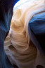
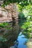
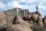
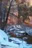
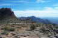
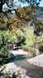
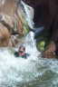
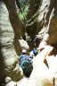
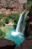
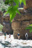
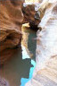
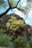
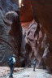
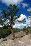
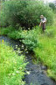
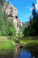
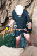
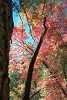
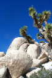
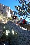
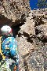
Most of the photos are uploaded from Kathy's 2.2 megapixel digital camera (Kodak DX3600).
Most of the PhotoWorks albums are not accessible right now. PhotoWorks changed their website and creating new links is going to take quite a bit of time. The Photoworks links that work now are marked "fixed at PW."
- Kathy's 2004 Favorites, downloadable full-size at WebShots
- Jan. 2, Cross-country to Carney Springs Trail (Superstitions), at SnapFish and PhotoWorks
- Jan 18, Performance Software Holiday hike at the West Fork of Oak Creek Canyon
- Feb. 21, Siphon Draw, day hike
- Mar. 28, Picket Post Mountain, day hike
- Apr. 4, Sullivan Canyon, rock climbing
- May 1, Salome Creek with AMC, canyoneering (photos from digital camera in vinyl watertight bag)
- May 2, Salome Creek with VOA, canyoneering (photos from waterproof APS film)
- May 8, Allan's Canyon, canyoneering
- May 14-17, Havasu Canyon, annual 4-day hiking trip
- Kathy's digital camera photos
- Kathy's waterproof camera photos
- May 22, Fish Creek, hike
- May 29-Jun 6, Annual Utah Canyoneering Trip
- Audio clip
- Kathy's photos
- Tim's Picks from the technical canyons ( Some Utah Favorites )
- Day 0: Drive to Utah
- Day 1: Blarney and Shillelagh Canyons
- Day 2: Cheesebox Canyon, audio clip
- Day 3: Gravel Canyon
- Day 4: Leprechaun Canyon
- Day 5: West Fork of White Roost
- Day 6: Five-Mile Wash
- Day 7: The Chute of Muddy Creek
- Day 8: Drive home
- Richard's photos
- Blarney Canyon photos
- Shillelagh Canyon photos
- Cheese Box Canyon photos
- Gravel Canyon photos
- Jun 20, Red Boxes (West Clear Creek), canyoneering
- Jun 27, Greenback Creek, day hike
- Jul 3-5, Buckskin Gulch, 3-day slot canyon trip
- Jul 10, Granite Mountain, day hike
- Jul 17, Blue Tank Canyon, canyoneering
- Jul 24, Mount Baldy East, hike
- Jul 25, Hall Creek, hike
- Jul 31, Crystal Canyon, canyoneering (added this photo link in 2011)
- Aug 28, Sundance Canyon, canyoneering (added this photo link in 2011)
- Sep 4-8, Canyonlands, camping and hiking trip
- Sep 11-12, Willow Valley, backpacking trip
- Sep 18, Mt. Escudilla, fall colors hike
- Sep 25-26, Grand Canyon Cleanup
- Sep. 28,29,30, Oct. 2,3, AMC Lead School
- Oct. 09-11, Basic Canyoneering, high-res copies (Contact: ACA )
- Oct. 24, West Fork of Oak Creek, annual fall colors day hike (fixed at PW)
- Nov. 26-28, Joshua Tree, rock-climbing (fixed at PW)
- Dec. 11, Granite Mountain, rock-climbing (fixed at PW)
- Dec. 18, Jacuzzi Spires, rock-climbing (fixed at PW)
- 2002 West Clear Creek, 2003 Sycamore Canyon
- April 2003, Sycamore Canyon
- Sycamore Canyon (at the border)
- Sycamore Canyon and Salome Creek with AMC
- May 2003, Salome with AMC
- Salome with AMC
- Salome with AMC
- Salome with AMC and VOA
- Salome with VOA and Havasu Canyon
- Havasu Canyon double exposures (oops!) from 2002 and 2003
- Havasu Canyon at the Colorado River
- Havasu Canyon and Beaver, Mooney, Havasu, and Navajo Falls
- Havasu Canyon at Havasu Falls
- Havasu Canyon and Keyhole Canyon
- Keyhole and Tubing the Virgin River
- Tubing the Virgin River
- May 2003, Tubing the Virgin River and Mystery Canyon, Zion
- Mystery Canyon
- Mystery Canyon
- June 2003, Spooky and Peekaboo Gulch, Escalante, Utah
Updated Wednesday, December 28, 2005